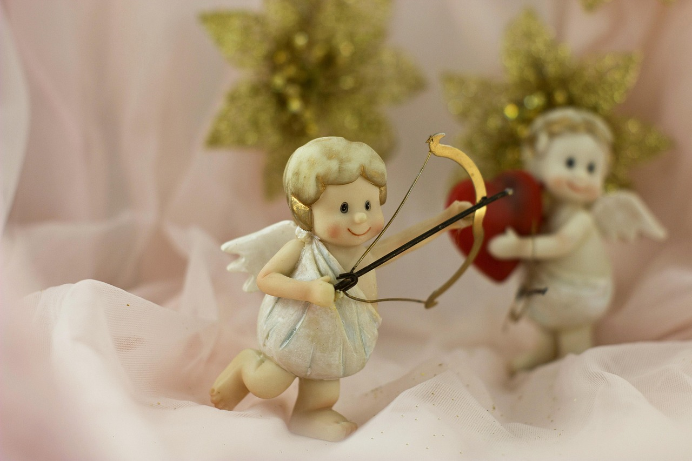
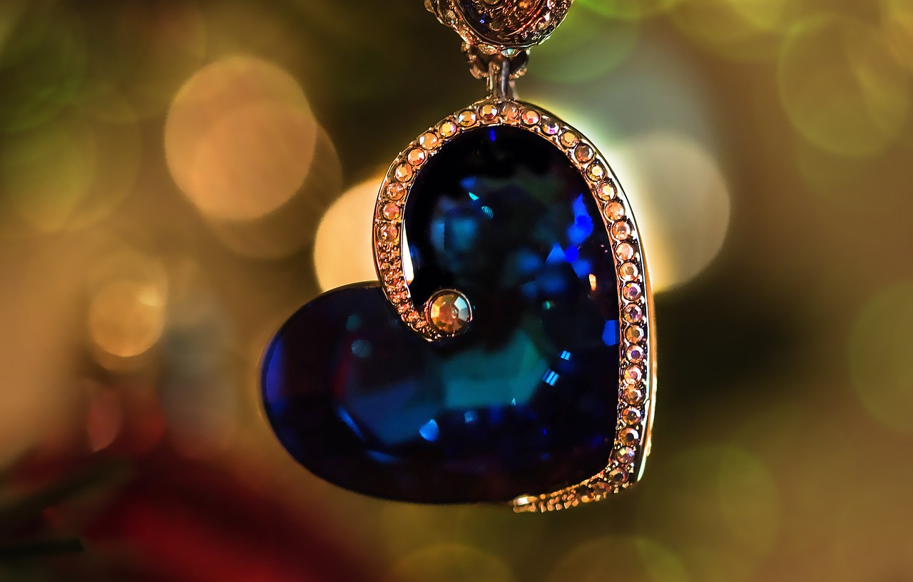
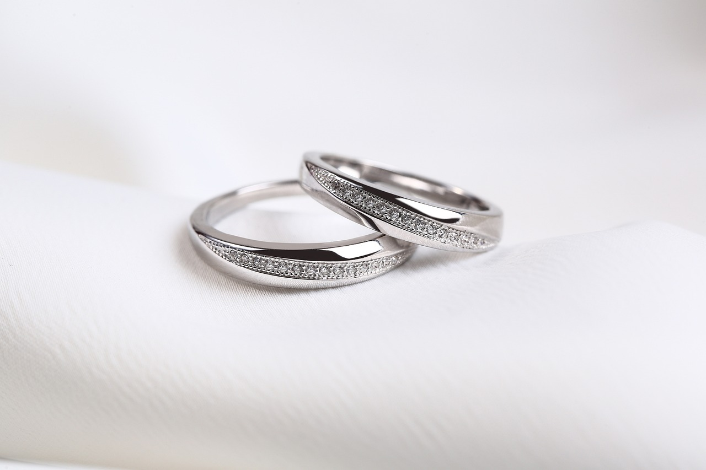
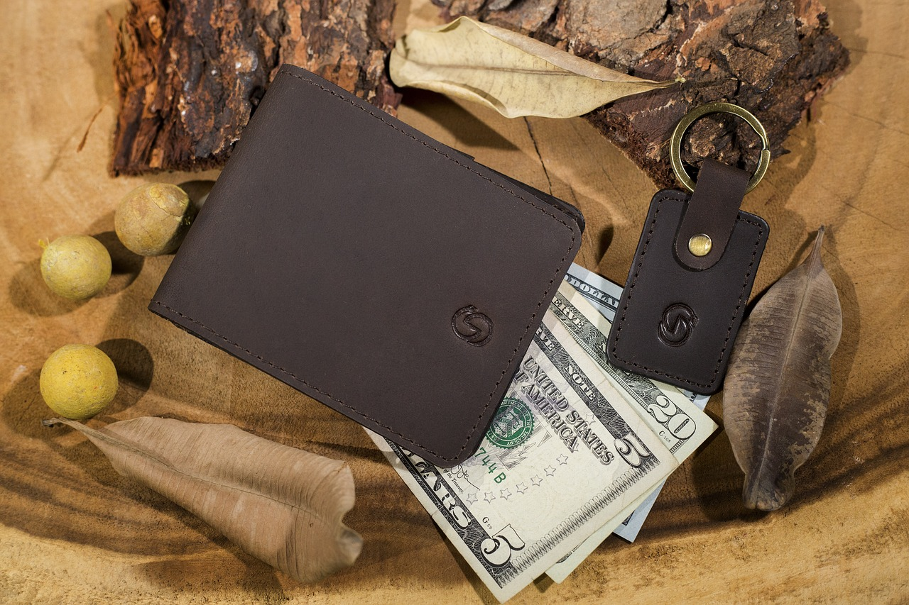

The Origins of Valentine's Day
Valentine’s Day is a holiday celebrated every February 14; this year Valentine's Day falls on a
Friday.
Across the United States and in other places around the world, candy, flowers and gifts are
exchanged
between loved ones, all in the name of St. Valentine.
But who is this mysterious saint and where did these traditions come from? Find out about the
meaning
and history of Valentine’s Day, from the ancient Roman ritual of Lupercalia that welcomed spring to
the
card-giving customs of Victorian England.
Read more
The Legend of St. Valentine

Saint Valentine, who according to some sources is actually two
distinct historical
characters who were said to have healed a child while imprisoned and executed by decapitation.
The history of Valentine's Day—and the story of its patron saint—is
shrouded in
mystery. We do know that
February has long been celebrated as a month of romance, and that St. Valentine’s Day, as we know it
today, contains vestiges of both Christian and ancient Roman tradition. But who was Saint Valentine, and
how did he become associated with this ancient rite?
The Catholic Church recognizes at least three different saints named Valentine or Valentinus, all of
whom were martyred. One legend contends that Valentine was a priest who served during the third century
in Rome. When Emperor Claudius II decided that single men made better soldiers than those with wives and
families, he outlawed marriage for young men. Valentine, realizing the injustice of the decree, defied
Claudius and continued to perform marriages for young lovers in secret. When Valentine’s actions were
discovered, Claudius ordered that he be put to death. Still others insist that it was Saint Valentine of
Terni, a bishop, who was the true namesake of the holiday. He, too, was beheaded by Claudius II outside
Rome.
A Pagan Festival in February
While some believe that Valentine’s Day is celebrated in the middle of February to commemorate the
anniversary of Valentine’s death or burial—which probably occurred around A.D. 270—others claim that the
Christian church may have decided to place St. Valentine’s feast day in the middle of February in an
effort to “Christianize” the pagan celebration of Lupercalia. Celebrated at the ides of February, or
February 15, Lupercalia was a fertility festival dedicated to Faunus, the Roman god of agriculture, as
well as to the Roman founders Romulus and Remus.
To begin the festival, members of the Luperci, an order of Roman priests, would gather at a sacred cave
where the infants Romulus and Remus, the founders of Rome, were believed to have been cared for by a
she-wolf or lupa. The priests would sacrifice a goat, for fertility, and a dog, for purification. They
would then strip the goat’s hide into strips, dip them into the sacrificial blood and take to the
streets, gently slapping both women and crop fields with the goat hide.
Far from being fearful, Roman women welcomed the touch of the hides because it was believed to make them
more fertile in the coming year. Later in the day, according to legend, all the young women in the city
would place their names in a big urn. The city’s bachelors would each choose a name and become paired
for the year with his chosen woman. These matches often ended in marriage.
A Day of Romance and Love

A victorian valentine depicting cupids.
Lupercalia survived the initial rise of Christianity but was outlawed—as it was deemed “un-Christian”—at
the end of the 5th century, when Pope Gelasius declared February 14 St. Valentine’s Day. It was not
until much later, however, that the day became definitively associated with love.
During the Middle Ages, it was commonly believed in France and England that February 14 was the
beginning of birds’ mating season, which added to the idea that the middle of Valentine’s Day should be
a day for romance. The English poet Geoffrey Chaucer was the first to record St. Valentine’s Day as a
day of romantic celebration in his 1375 poem “Parliament of Fowls,” writing, “For this was sent on Seynt
Valentyne’s day / Whan every foul cometh ther to choose his mate.”
Valentine greetings were popular as far back as the Middle Ages, though written Valentine’s didn’t begin
to appear until after 1400. The oldest known valentine still in existence today was a poem written in
1415 by Charles, Duke of Orleans, to his wife while he was imprisoned in the Tower of London following
his capture at the Battle of Agincourt. (The greeting is now part of the manuscript collection of the
British Library in London, England.) Several years later, it is believed that King Henry V hired a
writer named John Lydgate to compose a valentine note to Catherine of Valois.
Cupid

Cupid is often portrayed on Valentine’s Day cards as a naked cherub launching arrows of love at
unsuspecting lovers. But the Roman God Cupid has his roots in Greek mythology as the Greek god of love,
Eros. Accounts of his birth vary; some say he is the son of Nyx and Erebus; others, of Aphrodite and
Ares; still others suggest he is the son of Iris and Zephyrus or even Aphrodite and Zeus (who would have
been both his father and grandfather).
According to the Greek Archaic poets, Eros was a handsome immortal played with the emotions of Gods and
men, using golden arrows to incite love and leaden ones to sow aversion. It wasn’t until the Hellenistic
period that he began to be portrayed as the mischievous, chubby child he’d become on Valentine’s Day
cards.
Greetings and Gifts
In addition to the United States, Valentine’s Day is celebrated in Canada, Mexico, the United Kingdom,
France and Australia. In Great Britain, Valentine’s Day began to be popularly celebrated around the 17th
century.
By the middle of the 18th, it was common for friends and lovers of all social classes to exchange small
tokens of affection or handwritten notes, and by 1900 printed cards began to replace written letters due
to improvements in printing technology. Ready-made cards were an easy way for people to express their
emotions in a time when direct expression of one’s feelings was discouraged. Cheaper postage rates also
contributed to an increase in the popularity of sending Valentine’s Day greetings.
Americans probably began exchanging hand-made valentines in the early 1700s. In the 1840s, Esther A.
Howland began selling the first mass-produced valentines in America. Howland, known as the “Mother of
the Valentine,” made elaborate creations with real lace, ribbons and colorful pictures known as “scrap.”
Today, according to Hallmark, an estimated 145 million Valentine’s Day cards are sent each year, making
Valentine’s Day the second largest card-sending holiday of the year (more cards are sent at Christmas).
A Gift for Every Heart
Romantic Gifts for Her
"Surprise her with a thoughtful gift that will make her feel
special. From elegant
jewelry to luxurious
perfumes, there’s something for every woman."

Jwellery
Jewelry is a timeless way to express love and
admiration. Whether it’s a delicate bracelet, a shimmering necklace, or a meaningful
ring, these gifts symbolize lasting affection. Choose pieces that reflect your loved
one’s personality—perhaps a birthstone necklace, a charm bracelet, or a classic gold
band.

Ring
A ring is more than just a piece of jewelry—it is a timeless symbol of love,
commitment, and togetherness. Whether it’s a classic gold band, a dazzling diamond
ring, or a personalized engraved piece, rings hold deep sentimental value.

beauty sets
Pamper your loved one with a luxurious spa or beauty
set that offers relaxation and self-care. These sets often include scented candles,
bath bombs, skincare essentials, and aromatic oils that create a soothing
experience.

chocolates
Classic yet always appreciated, flowers and chocolates
never fail to bring a smile. A bouquet of roses, lilies, or tulips carries deep
romantic meanings, while gourmet chocolates offer a sweet way to indulge in love
Thoughtful Gifts for Him
"For the special man in your life, find the perfect gift
that blends luxury and
practicality. Whether it's a timeless watch or a personalized keepsake, show him how much you care."

⌚Watches
A watch is more than just a timepiece; it is a
statement of style, personality, and sentiment. Whether it's a luxury watch for
a sophisticated touch, a sporty one for an active lifestyle, or a smartwatch for
convenience, the perfect watch can make a lasting impression.

👛Wallets
Wallets and belts are practical yet stylish gifts
that blend utility with elegance. A high-quality leather wallet not only
organizes essentials but also represents a refined sense of fashion. A sleek
belt completes an outfit, adding sophistication to any look.
🖋️ Personalized items
Personalized gifts carry a special charm, turning
simple objects into meaningful treasures. Engraved pens add a sophisticated
touch to a professional’s desk, while custom keychains serve as everyday
reminders of love.

🎧 Tech gadgets
For those who love technology, gadgets like
wireless headphones and smartwatches make excellent gifts. Wireless headphones
provide a seamless music experience, perfect for relaxation or workouts.
Smartwatches help track health, stay connected, and enhance daily life
Gift-Ideas & Last-Minute Valentine’s Day Gifts
"Running out of time? Don’t worry—here are last-minute gift ideas that
are still
thoughtful and
meaningful."
- Personalized Gifts:
Custom-printed T-shirts, mugs, or pillows with personal
messages or images. For last-minute, order custom items online with fast shipping or print them
yourself.
- Tech Gadgets: Smartwatches,
wireless headphones, Bluetooth speakers, or
portable chargers. For last-minute, grab them from an electronics store or order from retailers with
fast delivery.
- Subscription Boxes: Monthly
deliveries of beauty products, gourmet snacks,
or books. For last-minute, gift a digital subscription like Netflix, Spotify, or a magazine.
- Customized Love Letters or
Poems: Expressing your feelings through a
handwritten or digital letter or poem. For last-minute, handwrite a personal note or send a
digitally crafted poem.
- Instant Download Gifts: Digital
love art, quotes, or calendars that can be
printed or shared online. For last-minute, download and print from home or share a digital file
instantly.
Grand Gestures of Love Through History
These people went far beyond sending cards and chocolates to demonstrate their love.
Taj Mahal
.jpg)
India’s Taj Mahal took over a decade to build, employed
thousands of workers and nearly bankrupted an
empire—all so a man could express his love for a woman.
Mughal emperor Shah Jahan commissioned the famed landmark around 1632. It was intended as a tomb for
his third wife, Mumtaz Mahal, who died giving birth to the couple’s 14th child. According to
accounts, the Shah was so despondent after his spouse’s passing that he entered a prolonged period
of mourning, renouncing music and other forms of entertainment for two years.
He built the Taj Mahal—with its elaborate minarets, 250-foot-high domed mausoleum and 42-acre
grounds—primarily as a monument to her memory. When he died in 1666, Shah Jahan was buried alongside
his beloved wife in the Taj’s white marble tomb.
Edward VIII's Abdication of the Throne

Wallis, Duchess of Windsor and the Duke of Windsor outside Government House
in Nassau, the Bahamas.
The love lives of Britain’s monarchs have long been a source of public fascination, but perhaps the
most romantic royal tale of all concerns King Edward VIII, who chose a woman over the throne.
Edward became king in 1936 after the death of his father, George V. His brief reign was punctuated
by controversy, most notably his infatuation with a socialite named Wallis Simpson. Not only was
Simpson an American, she was a married woman who had already once divorced. As gossips portrayed
Simpson as everything from a scheming seductress to a German spy, the relationship plunged the
monarchy into crisis.
Forced to choose between love and crown, Edward abdicated the throne in December 1936. (Some
scholars have speculated that Edward’s Nazi sympathies—rather than his romantic ties—were the true
motivation behind the political push for his abdication.) Simpson quickly divorced her husband, and
she and Edward married in 1937. They spent the rest of their lives in retirement in France.
Elizabeth Barrett Browning's Sonnets for Robert Browning

Robert Browning and Elizabeth Barrett Browning, circa 1850s. Both were
prominent poets when they married in 1846. Barrett’s book “Sonnets from the Portuguese,” was a
series of love poems composed when the pair first began their courtship.
The marriage of poets Elizabeth Barrett Browning and Robert Browning is one of literature’s great
romances, and the couple’s love for one another often spilled over into their work.
The most famous example came in 1850 with the publication of Barrett’s book “Sonnets from the
Portuguese,” a series of love poems composed when the pair first began their courtship. Barrett only
revealed the work to her husband after hearing him rail against the thematic shortcomings of what he
called “personal poetry.” To counter his argument, she admitted that she had once written a series
of 44 sonnets about her love for him.
Struck by the beauty of the poems, Browning encouraged his wife to publish them; she finally agreed
but insisted that they be presented as alleged translations of Portuguese sonnets in order to hide
their personal nature. “Sonnets From the Portuguese” contains what many consider some of Barrett’s
most exquisite verses and includes the immortal line, “How do I love thee? Let me count the ways.”
Edward VIII's Abdication of the Throne

Marilyn Monroe and Joe DiMaggio in the judge's chambers where they were
married in January 1954.
Famed baseball player Joe DiMaggio and actress Marilyn Monroe were only married for a volatile 274
days in 1954, but “Joltin’ Joe” remained infatuated with the legendary blonde bombshell for the rest
of his life.
It was DiMaggi o who secured Monroe’s release from a psychiatric ward when she suffered an emotional
collapse in the wake of her divorce from playwright Arthur Miller, and he was reportedly considering
proposing to her again before her death in 1962.
DiMaggio never remarried and refused to comment on Monroe’s death to the press. In a famous romantic
gesture, he sent red roses to her grave in Los Angeles three times a week for the next 20 years.